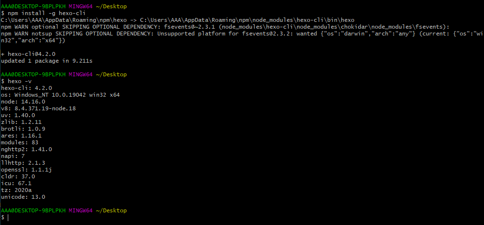
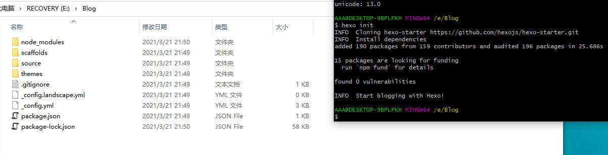
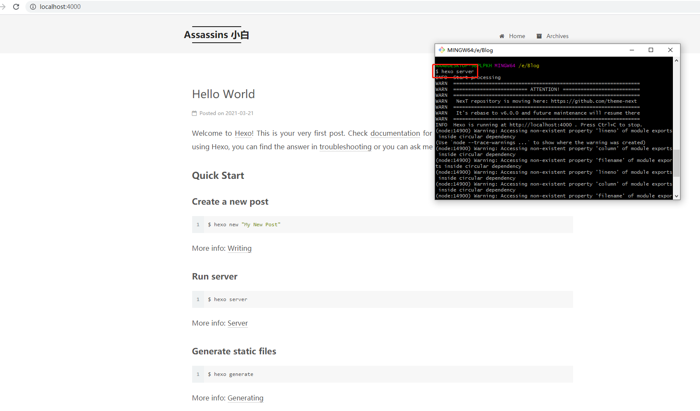
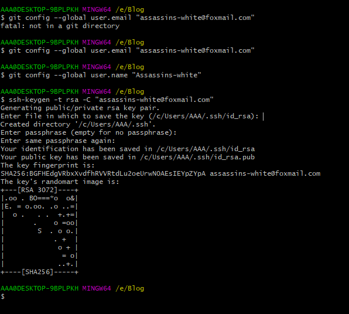
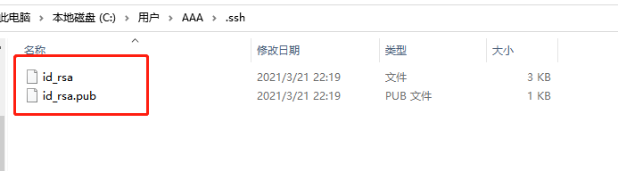
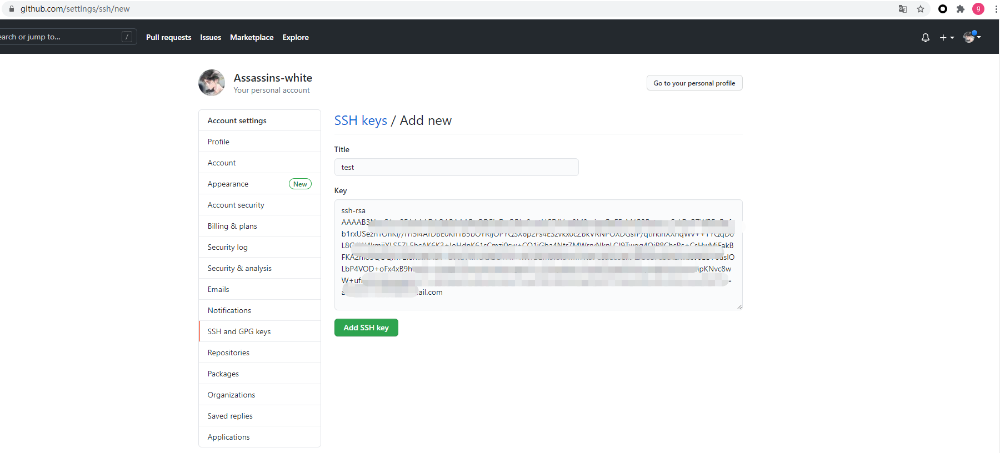
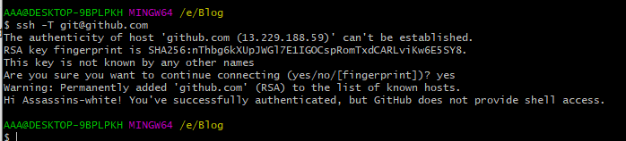
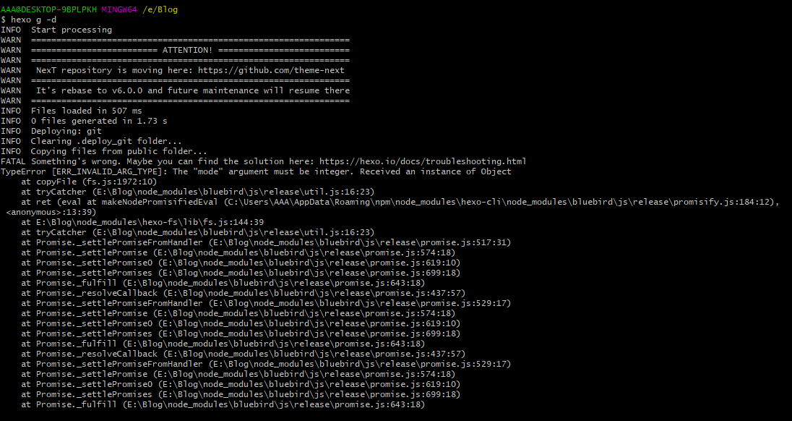
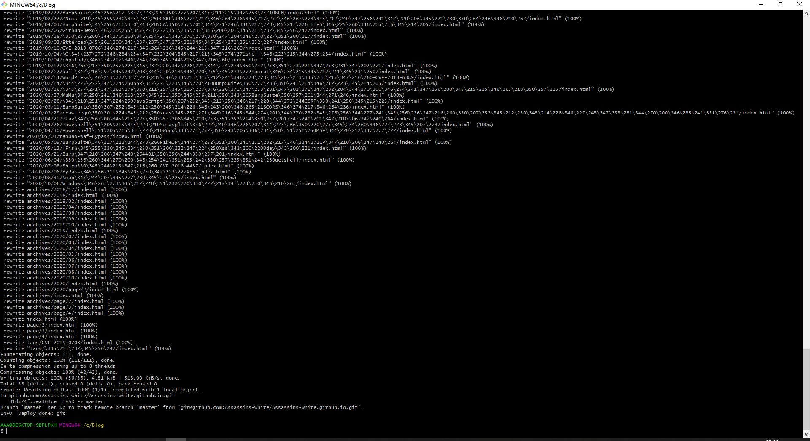

最近刚装完系统，重装之前把博客的源文件拷贝了一份放到移动硬盘里，现在需要把博客恢复，特此记录
先装两个软件
Node.js：https://nodejs.org/en/
Git：https://git-scm.com/download/
因为博客使用的hexo模板，所以还需要安装hexo，命令：npm install -g hexo-cli
装完之后使用 hexo -v 查看有没有成功安装

随后新建一个文件夹，当作博客目录，然后cd进去，执行命令初始化 hexo init
然后把之前的文件全部粘贴过来，选择全部覆盖
这个时候，这个本地环境的文件已经是要发布的文件了

使用 hexo server 命令将博客发布在本地的4000端口，即可看到自己发布的文章以及之前博客的界面

现在只差将博客托管到Github上了
本地设置git邮箱、用户名和密码
git config –-global user.email ""你注册GitHub的邮箱"
git config –-global user.name “你的GitHub用户名”
本地创建SSH Key
ssh-keygen -t rsa -C “邮箱地址”
上面命令尽量手敲，复制粘贴可能会报错 fatal: not in a git directory
下面的不用输入，直接按回车跳过使用默认的就行

这时候就生成公钥私钥了

然后把我们电脑上的公钥（id_rsa.pub）拷贝到GitHub的 settings -> SSH and GPG keys -> SSH Keys -> New SSH Key
Title随便写，Key把id_rsa.pub的内容全部复制过去

验证下SSH是否设置成功
ssh -T git@github.com
第一次提示不能连接，直接输入yes即可

hexo g -d部署报错

尝试下载低版本node：https://nodejs.org/download/release/v12.14.0/

成功